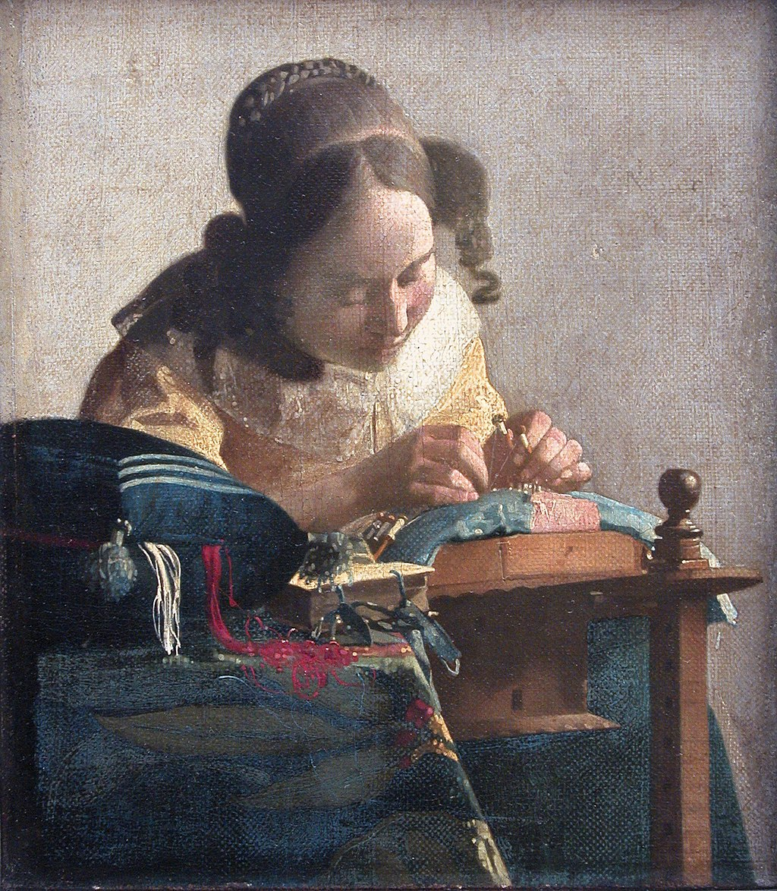

<head>
<meta charset="UTF-8" />
<meta name="keywords" content="drawing, painting" />
<meta name="description" content="drawings by Sunjy" />
<title>Sunjy</title>
<link rel="shortcut icon" type="image/x-icon" href="../../mImages/mCommon/favicon.ico" media="screen" />
<link rel="stylesheet" type="text/css" href="../../mCsses/mCommon/mCssA.css" />
<link rel="stylesheet" type="text/css" href="../../mCsses/mCommon/mCssB.css" />
<link rel="stylesheet" type="text/css" href="../../mCsses/mCommon/mCssC.css" />
<link rel="stylesheet" type="text/css" href="../../mCsses/mCommon/mCssD.css" />
<link rel="stylesheet" type="text/css" href="../../mCsses/mContent/mCssA.css" />
<link rel="stylesheet" type="text/css" href="../../mCsses/mContent/mCssB.css" />
<link rel="stylesheet" type="text/css" href="../../mCsses/mContent/mCssC.css" />
<link rel="stylesheet" type="text/css" href="../../mCsses/mContent/mCssD.css" />
</head>
<script type="text/javascript" src="../../mScripts/mContent/mContentAA.js" /></script>
<script type="text/javascript" src="../../mScripts/mContent/mContentAB.js" /></script>
<script type="text/javascript" src="../../mScripts/mContent/mContentAC.js" /></script>
<script type="text/javascript" src="../../mScripts/mContent/mContentAD.js" /></script>
<script type="text/javascript"></script> 
<script type="text/javascript">
document.write('<div class="mImgAbsolute"></div>');
/*
document.write('<p class="mFontSizeBColor" />From a white paper...</p>');
document.write('<table class="center"><tr><td>');
document.write('');
document.write('</td></tr></table>');
*/
</script>


<script type="text/javascript">
document.write('<p class="mFontSizeBColor" />The Lacemaker</p>');
document.write('<p class="mFontSizeSColor" />“The Lacemaker” by Johannes Vermeer shows a young lacemaker concentrating on her task. She is holding up a pair of bobbins in her left hand as she carefully places a pin in the pillow on which she is making her bobbin lace.<br><br>The girl is set against a blank wall to eliminate any distractions from the image of concentration and focus. The techniques of lacemaking are portrayed in detail and accurately.<br><br>Vermeer may have used a camera obscura while composing the work. Many of the optical effects that are typical of photography can be seen, particularly the blurring of the foreground.<br><br>By rendering areas of the canvas as out-of-focus, Vermeer can suggest a depth of field in a manner unusual of Dutch Baroque painting of the era.<br><br>Vermeer has painted the girl’s face and body and the pattern of the material on which she is working in an abstract style.<br><br>The girl’s hands, the curls of her hair are all depicted in an abstract manner unusual for the era in which Vermeer worked.<br><br>The red and white of the lace are shown spilling from the sewing cushion providing the impression of a near liquid form.<br><br>The blurring of these threads contrasts sharply with the precision of the lace being working on by the lacemaker.<br><br>This masterpiece is the smallest of Vermeer’s paintings and, in many ways, one of his most abstract.<br><br>Camera Obscura<br><br>Camera obscura refers to the optical phenomenon that occurs when an image at the other side of a screen is projected through a small hole in that screen onto the surface opposite the opening.<br><br>Camera Obscura, with a lens in the opening, has been used since the second half of the 16th century. The technique became famous as an aid for drawing and painting.<br><br>As a drawing aid, it allowed the tracing of a projected image to produce a highly accurate representation, especially as a way to achieve a correct graphical perspective.<br><br>In the 17th century, Dutch Masters, such as Johannes Vermeer, were known for their magnificent attention to detail.<br><br>It has been widely speculated that they made use of the camera obscura, but the extent of their use by artists at this period remains a matter of controversy.<br><br>In the first half of the 19th century, the camera obscura box was developed further into the photographic camera.<br><br>The camera obscura boxes were used to expose light-sensitive materials to the projected image, creating the first photographs.<br></p>');
document.write('<table class="center" /><tr><td>');
document.write('<br>The girl is set against a blank wall to eliminate any distractions from the image of concentration and focus. The techniques of lacemaking are portrayed in detail and accurately.<br><br>Vermeer may have used a camera obscura while composing the work. Many of the optical effects that are typical of photography can be seen, particularly the blurring of the foreground.<br><br>By rendering areas of the canvas as out-of-focus, Vermeer can suggest a depth of field in a manner unusual of Dutch Baroque painting of the era.<br><br>Vermeer has painted the girl’s face and body and the pattern of the material on which she is working in an abstract style.<br><br>The girl’s hands, the curls of her hair are all depicted in an abstract manner unusual for the era in which Vermeer worked.<br><br>The red and white of the lace are shown spilling from the sewing cushion providing the impression of a near liquid form.<br><br>The blurring of these threads contrasts sharply with the precision of the lace being working on by the lacemaker.<br><br>This masterpiece is the smallest of Vermeer’s paintings and, in many ways, one of his most abstract.<br><br>Camera Obscura<br><br>Camera obscura refers to the optical phenomenon that occurs when an image at the other side of a screen is projected through a small hole in that screen onto the surface opposite the opening.<br><br>Camera Obscura, with a lens in the opening, has been used since the second half of the 16th century. The technique became famous as an aid for drawing and painting.<br><br>As a drawing aid, it allowed the tracing of a projected image to produce a highly accurate representation, especially as a way to achieve a correct graphical perspective.<br><br>In the 17th century, Dutch Masters, such as Johannes Vermeer, were known for their magnificent attention to detail.<br><br>It has been widely speculated that they made use of the camera obscura, but the extent of their use by artists at this period remains a matter of controversy.<br><br>In the first half of the 19th century, the camera obscura box was developed further into the photographic camera.<br><br>The camera obscura boxes were used to expose light-sensitive materials to the projected image, creating the first photographs.<br>" />');
document.write('</td></tr></table>');
</script>


